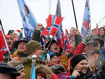

|
Главная |
Контакты |
1. О Норвегии
· карта Норвегии
· Норвегия –страна гор, морей и троллей
2. Национальные символы Норвегии
3. Норвежский язык
4. Праздники в Норвегии
· национальные праздники
· государственные праздники
· религиозные праздники
5. Национальный костюм
6. Национальная кухня
7. Города Норвегии
· Осло
· Бодо
· Берген
· Ставангер
· Тронхейм
8. Образование в Норвегии
· университет Норланда в Бодо
9. Музеи Норвегии
· музеи Осло
· музеи Тронхейма
10. Спорт в Норвегии
· лыжные традиции
· лыжные курорты
Главная
 Многим кажется,
что Норвегия – это суровая, холодная страна, где и смотреть-то собственно и
нечего по сравнению с тропическими странами. На самом деле это не так. Норвегия
завораживает и туда хочется ехать снова и снова. Свои
впечатления от этой страны вы увидите на этом сайте
Многим кажется,
что Норвегия – это суровая, холодная страна, где и смотреть-то собственно и
нечего по сравнению с тропическими странами. На самом деле это не так. Норвегия
завораживает и туда хочется ехать снова и снова. Свои
впечатления от этой страны вы увидите на этом сайте

 Красивая природа, несмотря на мелкий и нудный дождь в Бергене,
приветливые люди , чистота и комфорт для проживания, интересные места и история.
Норвежские фьорды – это отдельная тема. Это море и скалы, горы и зелень лесов ,
которые на картинке выглядят совсем не так, как на самом деле. Картинка не
пахнет морем и рыбой, солью и цветами, картинку нельзя потрогать руками.
Норвежцы очень бережно относятся к своей природе. Даже на лужайках жилых домов
можно увидеть лесные грибы.
Красивая природа, несмотря на мелкий и нудный дождь в Бергене,
приветливые люди , чистота и комфорт для проживания, интересные места и история.
Норвежские фьорды – это отдельная тема. Это море и скалы, горы и зелень лесов ,
которые на картинке выглядят совсем не так, как на самом деле. Картинка не
пахнет морем и рыбой, солью и цветами, картинку нельзя потрогать руками.
Норвежцы очень бережно относятся к своей природе. Даже на лужайках жилых домов
можно увидеть лесные грибы.
 О
Норвегии Карта Норвегии
О
Норвегии Карта Норвегии
Королевство Норве́гия располагается в западной части Скандинавского полуострова и на большом количестве прилегающих к Скандинавскому полуострову мелких островов, а также архипелаге Шпицберген (Свальбард), островах Ян-Майен и Медвежий в Северном Ледовитом океане. Зависимой территорией Норвегии является остров Буве в южной части Атлантического океана.
Норвегия граничит с тремя государствами: со Швецией — на востоке, с Финляндией и с Россией — на северо-востоке. Страну омывают Баренцево море — на северо-востоке, Норвежское море — на западе и Северное море — на юго-западе.
Название страны происходит от древнескандинавского слова Norðrvegr — «путь на север»
 О
Норвегии Норвегия - страна гор
, морей и троллей
О
Норвегии Норвегия - страна гор
, морей и троллей
Бог наделил эту страну могущественными горами, позволяющими развивать горнолыжный туризм, и манящими таинственностью фьордами, богатыми рыбой горными реками - вот основные притягательные силы норвежского туризма. В эту страну хочется приезжать снова и снова. Норвегия – это место с величественными пейзажами , которых не встретишь ни в одной другой стране. Это море и горы, но не такие, как на Кавказе или в Турции, а совсем другие. Норвежские фьорды , водовороты и водопады нельзя спутать ни с чем. Большая часть Норвегии -это скалы, поэтому земля используется очень рационально.
Характер норвежцев, по-видимому, тоже формировался морской стихией и мрачным величием горной страны. Про норвежцев можно точно сказать, что они обладают нордическим характером. Они очень спокойные и уравновешенные, причем спокойны даже дети. Они практически не плачут и не капризничают!!!! С детьми здесь разговаривают очень спокойно, взрослые никогда не разговаривают на повышенных тонах ни с кем. Что еще запомнилось в Норвегии? Тролли и викинги. Они везде – в магазинах и на рынках, в офисах и на улице, в кафе и барах, в музеях и в домах. Норвегия- страна сказочных троллей и древних викингов, от них не спрячешься никуда.
Национальные символы Норвегии
Главный символ – цветок вереска пурпурного. Вереск растет по всей Норвегии: его цветы можно увидеть повсюду - и на побережье, и в долинах, и высоко в горах.
 Другой символ – это представитель животного мира
– лось. Это самое крупное и наиболее распространенное в Норвегии животное.
Сувениры с его изображением можно увидеть везде, как и троллей с викингами.
Другой символ – это представитель животного мира
– лось. Это самое крупное и наиболее распространенное в Норвегии животное.
Сувениры с его изображением можно увидеть везде, как и троллей с викингами.
Третий символ Норвегии – это птица – оляпка. Эту маленькую птичку называют еще водяным воробышком из-за ее обитания около водоемов. Птичка может нырять в реки и водопады, разыскивая насекомых, находиться под водой целую минуту и гулять по дну.
НОРВЕЖСКИЙ ЯЗЫК
Норвежский язык принадлежит к северогерманской группе языков. Норвежский язык очень похож на шведский и датский, которые являются скандинавскими языками. Норвежцы, шведы и датчане понимают друг друга сразу, потому что говорят по-скандинавски.
Старонорвежский язык появился вскоре после 1000 года, когда Норвегия приняла христианство, В это время скандинавские руны заменил латинский алфавит. В 1814 году Норвегия приняла собственную конституцию, но государственным языком был датский язык , что не устраивало норвежцев, и Х.Вергеланд и И.Осен создали новый норвежский письменный язык. Хенрик Вергеланд был поэтом и постепенно вводил в датский язык норвежские слова и выражения. Так появился язык «букмол».
Ивар Осен был более радикален. Он изучил северогерманские диалекты и создал новый язык на основе норвежского разговорного языка и местных диалектов. Этот язык называется «лансмол», или «нюнорск» (новый норвежский).
Различий между «букмол» и «нюнорск» практически нет, но в «нюнорск» более сложная система склонений и спряжений и больше дифтонгов.
Среди письменных языков Норвегии существует еще «самнорск» ("пан-норвежский") и «риксмол» (общий стандарт). «Самнорск» - это попытка создать единый норвежский письменный язык из «букмол» и «нюнорск», а «риксмол» - это наиболее строгая форма «букмол»- языка образованного городского населения.
Как не запутаться иностранцу в этих языках? Ситуация не так страшна, как это может показаться. Все дело в том, что различия между этими языками не так велики, как кажется. В письменном виде они почти не различаются, а все отличие заключается в диалектах разговорного языка. Поэтому, слушайте, запоминайте и разговаривайте по- норвежски!
Праздники в Норвегии------» Национальные праздники Норвегии
Праздники в Норвегии делятся на государственные, национальные и религиозные. Самые значительные праздники в Норвегии – это Рождество, День Конституции, Новый год, День труда. Среди религиозных праздников выделяется Пасха, Вознесение, Троица, Страстная пятница.
День Конституции Норвегии (17 мая)
День Конституции отмечается в Норвегии 17 мая, в честь принятия Норвежской Конституции 17 мая 1814 года в городе Эйдсволль. Национальным праздником День Конституции стал благодаря поэту Б.Бьёрнсону и общественному деятелю Х.А.Вергеллану. В этот день все норвежские школьники участвуют в параде под звуки оркестра. Каждая школа несет знамя, а каждый ученик – маленький норвежский флаг. Эта традиция берет начало с 20 столетия, когда Вильям Форе основал детский оркестр, и его первое выступление состоялось 17 мая в Осло. Сейчас школьные оркестры есть в каждой школе и обязательно выступают на праздновании Дня Конституции.
День саамского народа (6 февраля)
Саами – это древний скандинавский народ, проживавший на территории Скандинавского полуострова, и считающийся предками нордов. На сегодняшний день саамов насчитывается чуть более 40 тысяч человек, и они признаны национальным меньшинством страны.
В настоящее время осуществляется деятельность по возрождению культуры и самобытности саамов-скольтов в Норвегии.
Саамы до сих пор почитают священные камни, верят в духов и поклоняются высоким пням.
День рождения королевы Сони Харальдсен (4 июля)
Королева Соня, урождённая Соня Харальдсен (норв. Sonja Haraldse) родилась 4 июля 1937 года в Осло. Она является женой короля Харольда V и королевой Норвегии с 17 января 1991 года.
После обучения в гимназии, будущая королева окончила дизайнерское училище в Осло, а затем школу искусств и ремесел. После этого обучалась в Университет Осло.
Соня и Харальд встречались тайно около 10 лет до свадьбы. Они сыграли свадьбу 29 августа 1968 года в Осло, и это был первый прецедент в истории норвежской монархии, когда кронпринц выбрал себе невесту "некоролевских" кровей. Но королева Соня быстро завоевала сердца своего народа, активно участвуя в международной общественной деятельности. Соня является вице-президентом норвежского Красного Креста и курирует работу реабилитационных центров для инвалидов. Этот проект получил экономическую поддержку норвежской стороны. После смерти короля Олава V 17 января 1991, Соня стала королевой Норвегии, а 23 июня 1991 года королевская чета была коронована в Тронхейме.
День прославления Святого Олафа (29 июля)
Король Олаф II почитается
как святой в Северной Европе, принесший христианство в Норвегию. Он является
национальным героем, объединителем государства и Святым покровителем Норвегии.
Святой Олаф почитаем и в России как святой благоверный Олаф Харальдсон, король
Норвегии, креститель и просветитель. Он несколько лет жил в Новгороде и Старой
Ладоге, где в его честь освящены храмы. Могила Олафа в соборе города Тронхейма является центром
паломничества верующих всей Скандинавии.
Сегодня норвежцы соблюдают все религиозные и культурные традиции времен правления короля Олафа. В этот праздник можно увидеть средневековые концерты и представления, где показывают жизнь короля Олафа. В церквях проходят праздничные службы, а в музеях открываются выставки со средневековыми экспозициями.
Праздники в Норвегии------» Государственные праздники Норвегии
Новый год (1 января)
Как и везде в мире , в Норвегии новый год – это семейный праздник. Каждая семья встречает его дома за праздничным столом, с многочисленными обычаями и традициями, присущими этой стране.
Перед Новым годом большинство норвежцев идут в церковь, чтобы получить благословение в наступающем году. Застолье, как и в России, обычно начинается задолго до полуночи и продолжается до самого утра.
Незадолго до полуночи начинается фейерверк, который начинает расти с каждым часом, и достигает апогея к 12 часам.
Праздники в Норвегии------» Религиозные праздники.
Пасха (8 апреля)
Самый важный религиозный праздник в Норвегии –это Пасха. Этот праздник отмечают все христиане , радуясь воскресению Христа. Но основная часть жителей Норвегии – это лютеране, поэтому празднование Пасхи в Норвегии немного отличается от празднования в других странах. Норвежцы не придают особого значения религиозной основе этого праздника, и лишь немногие верующие приходят в храм на Пасху. Основная масса норвежцев едет на Пасхальные выходные отдыхать в горы и покататься на лыжах, а дети уходят на недельные каникулы.
В Норвегии Пасху встречают не только крашеными яйцами, но и пасхальными кроликами и цыплятами. Их изготавливают обычно из различных материалов и их можно увидеть где угодно : на витринах магазинов, на окнах и дверях домов, на открытках и в журналах, в виде сувениров и наклеек и т.д.
В течении недели Норвегия отмечает Пасху, а на пасхальное воскресенье принято встречать рассвет и дарить друг другу пасхальные яйца.
Рождество (25 декабря)
 Католическое Рождество – это праздник, приуроченный к
рождению Спасителя Иисуса Христа. В Норвегии празднование начинается накануне.
В ночь с 25 на 26 декабря во всех церквях страны проходят праздничные мессы и
службы. После окончания служб норвежцы устраивают различные церемонии и обряды,
посвященные Санта Клаусу – Юлениссе. Обязательным элементом Рождества является
елка. Она должна стоять в каждом доме, где вокруг нее водят хороводы
и поют песни. Сам праздник Рождества принято
встречать дома, в кругу семьи за праздничным столом.
Католическое Рождество – это праздник, приуроченный к
рождению Спасителя Иисуса Христа. В Норвегии празднование начинается накануне.
В ночь с 25 на 26 декабря во всех церквях страны проходят праздничные мессы и
службы. После окончания служб норвежцы устраивают различные церемонии и обряды,
посвященные Санта Клаусу – Юлениссе. Обязательным элементом Рождества является
елка. Она должна стоять в каждом доме, где вокруг нее водят хороводы
и поют песни. Сам праздник Рождества принято
встречать дома, в кругу семьи за праздничным столом.
Масленица (10 февраля)
Масленица отмечается перед началом великого поста. В Норвегии она празднуется 3 дня и совмещает в себе и языческие, и христианские традиции. Такие традиции просматриваются в обрядах, которые прославляют весну и плодородие.
Одним из интереснейших обрядов празднования масленицы в Норвегии является хлестание березовой «масленичной веткой». Это березовая ветка, обернутая бумагой и украшенная цветами, с которой ходили по домам и хлестали тех, кто рано не встал в этот день, а еще спит. Со спящих стягивали одеяла и хлестали веткой для изгнания злых духов. Приходящих в дом с этой веткой, угощали заранее приготовленными сдобными булочками.
Национальный костюм
Национальный костюм Норвегии называется «бюнад». Этот костюм очень популярен в Норвегии. Его надевают в праздничные дни как женщины, так и мужчины всех слоев общества. В них наряжаются не только рядовые граждане, но и члены королевской семьи. Слово bunad в Норвегии появилось в начале 20-х годов и появилось оно от старонорвежского слова «búnaðr». Этим словом обозначался народный костюм, или домашнее платье.
В Норвегии существует огромное количество бюнадов. Мужской бюнад включает в себя брюки до колен, чулки, рубашку, жилет, жакет и шляпу. Мужские бюнады, так же как и женские украшены вышивкой и драгоценностями . в основном, серебром. Норвежцы считают, что серебро защищает от злых духов.
В полный комплект женского бюнада входят блуза с вышивкой, жилет, жакет, юбка, чулки, сумочка. Для зимнего варианта бюнада предназначена шаль и варежки, Обязательны украшения из серебра или золота - застежки, пуговицы, броши, серьги, запонки, кольца, пояса и особые туфли.
Самое красивое в бюнаде –это вышивка, которой норвежцы по праву гордятся. Вышивают не только рубашки и блузки, но даже чулки, перчатки и мужские брюки. Типов вышивки очень много. Это и черная вышивка для траурных мероприятий, цветная мережка для праздников, вышивание крестиком т.д. Платки могут даже иметь две разные стороны по цвету – одна сторона черная с вышитой белой розой –символом траура, а другая сторона с праздничной вышивкой.
Особо стоит отметить восхитительный бюнад для невесты, главным элементом которого стала корона. В современное время бюнад стал символом Норвегии.
Национальная кухня Норвегии.
Рыбные блюда.
Рыбы, ракообразные и морепродукты составляют основной рацион норвежской кухни. Существует масса рецептов приготовления рыбы. Очень популярны в Норвегии сельдь, лосось и, конечно же, треска. Из трески готовят рыбные щи, пироги, супы, основные блюда, закуски – в каждом блюде используется треска. Валяная и копченая рыба – самые популярные способы ее приготовления.
Среди рыбных блюд наиболее популярны:
· - треска "торск", в том числе знаменитая сушеная треска "клипфикс" и традиционный "лютефиск" - копченая сушеная треска, сваренная в воде со специями. Лютефиск обычно подается со свиными шкварками, с гороховм, картофелем, жареным беконом, горчицей и козьим сыром.
· - соленая сельдь "бокнафиск" подается с вареным картофелем и шкварками,
· -"фискемелье" - рубленая печень трески с рыбьей икрой,
· - "сурсильд" – маринованная сельдь с луком,
· -"фискеболлер" - рыбные фрикадельки под соусом бешамель,
· -лосось "лакс" в маринованном ("гравлакс"), жареном или копченом ("реклакс") виде,
· -жареные камбала, палтус и форель,
· -щи-уха с фрикадельками и яйцом,
· -вареные креветки "рекер",
· - морской гребешок, тушеный в молоке с сельдереем и чесноком и т. д.
.
Мясные блюда
В Норвегии, кроме рыбы, широко употребляются и мясные продукты. Наиболее популярны жареные свиные ребрышки, жареные бараньи и овечьи головы, которые называются "смалховт". Не менее популярен традиционный "форикол" - ягненок, сваренный с тушеной капустой, а затем запеченный вместе с ней под коричневым мучным соусом. Это лосятина и оленина во всех видах, блюда из мяса диких животных и птиц, обычно с гарнирами из различных бобовых, капусты и каш.
Из баранины готовят соленый овечий окорок "феналар", различные стейки и бифштексы, тушат баранину с капустой и зеленью, подавая с гарниром из различных круп.
Популярна снежная куропатка "рип", говяжьи биточки "хьетболлер" под соусом и мясные похлебки с зеленью- всего и не перечислить. Обычно в качестве гарнира к мясу подают блюда из картофеля.
Выпечка
К норвежским кулинарным традициям относится выпечка домашнего пирога и хлеба, поэтому домашние кондитерские в Норвегии пользуются большей популярностью. Большую популярность имеют картофельные хлебцы "лефсе", хрустящий хлеб "кнеккбред" из тонкого теста, напоминающий лаваш, а также его уменьшенный вариант - "флатбред".
Очень много видов десертной традиционной выпечки – это кексы, булочки, яблочная запеканка с сухарями и сметаной "тислерт бондепикер", фруктовое суфле "фромаш", мусс из яичных белков, взбитых с лесными ягодами и сахаром - "троллькрем", торт с кремом "блёткаке", хлебцы с медом, вафли , картофельные блины "ломперс" и традиционные блины "свелле".
Напитки
В Норвегии кофе считается излюбленным напитком. Норвежцы его пьют в любое время суток и в огромных количествах. Широко употребляются травяные настойки и чаи, компот из яблок с медом, отвары из фруктов.
Из алкогольных напитков наиболее распространено пиво "Rignes", виски, водка, джин и различные ликер. Традиционными спиртными напитками Норвегии считается "акевит" – это самогон из картофеля с тмином, выдержанный в деревянных бочках, который принято пить слегка подогретым, и грог( «глегг»), который варится из красного вина с кардамоном, гвоздикой, изюмом и миндалем. Грог считается «зимним» напитком, его пьют обычно после лыжных прогулок с имбирным печеньем.
Молоко и молочные напитки играют огромную роль в жизни норвежцев. Их потребление здесь на душу населения самое большое всех в мире. Всевозможные молочные продукты употребляются повсеместно и в огромном количестве. Козий сыр с шоколадом – специфический продукт, который обычно употребляют на завтрак.
Пасхальная кухня в Норвегии.
Главным атрибутом Пасхи, как и во многих странах мира, в Норвегии остаются крашеные яйца. Яйца непременно подаются на праздничный стол, а также используются для украшения дома и в качестве многочисленных сувениров. Сувенирные яйца делают деревянными, металлическими, бумажными и т.д. Они расписаны узорами, обвернуты золотой бумагой или фольгой. В них кладут небольшие подарки или лакомства для родственников и друзей - марципан, сушёные фрукты, алые сердечки, любовные записки, духи, монетки и другие приятные мелочи.
Пасхальный венок. Пасхальные цыплята
Символом Пасхи в Норвегии является также ягнёнок, как символ агнца, отданного в жертву ради спасения человечества. Еще один пасхальный символ – заяц, приносящий подарки , и являющийся символом плодородия.
Из напитков, как ни странно, на Пасху норвежцы ставят пиво Paskelbrygg- смесь из лучших сортов местного пива. В 1934 г. верующие протестовали против него, но после Второй мировой войны это пиво как традиция снова стало популярно.
Рождественская кухня в Норвегии
Если Вы празднуете рождество в Норвегии, скорее всего вам предложат одно из этих блюд:
Рождественские ребрышки, шашлык из бараньих ребрышек с картофелем, лютефиск - особым образом приготовленная треска, имеющую весьма специфический вкус. Лютефиск является главным традиционным блюдом новогоднего стола.
Одно из основных мероприятий для норвежцев перед Рождеством – это рождественская выпечка. В Норвегии существует традиция выпекать сладкое печенье к Рождеству из семи различных видов. Выпечкой печенья часто занимается вся семья – как взрослые, так и дети. Детям особенно нравится готовить и украшать имбирные пряники и пряничные домики.
Города Норвегии ------» Осло
Осло - столица норвежского государства, расположен на берегу трех заливов - Вьерквика, Пипервика и Фрогнера. Город находится в окружении лесов на холмистой местности и занимает 453 кв. м. Население составляет свыше 470 тыс. чел.

Осло- промышленный город. Здесь есть предприятия машиностроения и металлообработки, которые выпускают энергосиловое и целлюлозно-бумажное оборудование, платформы для морской добычи нефти, оборудование для электротехники и радиоэлектроники. Осло – транспортный узел Норвегии, откуда идут пути всех видов современного транспорта как по стране, так и за рубеж. От Восточного железнодорожного вокзала до королевского дворца тянется лавная улица города - Карл-Юхансгате.
В этом древнем городе построек до 18 века сохранились очень мало, он застроен преимущественно современными домами. Сохранились лишь остатки Старого города с крепостью Акерсхус, сооруженной около 1300 г. и перестроенной в XV-XVI вв.
На восточном берегу залива Пипервика возвышается здание ратуши, сооруженное в 1933-1950 гг. Оно украшен снаружи богатой скульптурой, а внутри - росписями на исторические темы. К старинным зданиям относится здание Парламента - Стортинга, возведенного в 1886 г., и Национальный театр, построенный в 1891-1899 гг.
Современные здания находятся, в основном, в западной же части города (Вестканте). Это особняки наиболее богатой части населения города и городские парки со знаменитым Фрогнер-парком. Это парк знаменит своим гигантским скульптурным ансамблем, созданным известным норвежским скульптором Хенриком Вигеландом. Около паркового ансамбля скульптур находится мемориальный музей скульптора.


Города Норвегии ------» Бодо

Что приятно удивило в первые минуты прилета в небольшой городок Бодо - это большой по меркам города, очень чистый и удобный аэропорт. До центра города ехать недалеко, причем дороги очень хорошие. Что непривычно для россиян – в городских автобусах нужно пристегивать ремень безопасности, как в автомобиле. Автобусы ходят точно по расписанию. Если написано, что автобус придет в 12.02, то он придет именно в 12.02, но ни минутой раньше или позже. Если ты поехал в университет на одном автобусе и возвращаешься на нем же в течение часа, то за билет уже не платишь. Вообще, для студентов и пенсионеров в Норвегии существует огромное количество льгот и скидок. Например, за мои билеты на самолет выплачивалась компенсация, а для студентов существует единый проездной билет, по которому можно ездить и в поездах, и на автобусах по всей стране.
Это железнодорожный вокзал г.Бодо, который был открыт в 1961 году и является крайней северной железнодорожной станцией Нурланна. С этого вокзала и отправимся путешествовать по Норвегии.
Итак, начнем с Будё или Бодо. Бу́дё (Bodø) — город и коммуна в фюльке (район) Нурланн, который является частью региона Сальтен. Город Будё получил статус коммуны в 1838 года. Город расположен севернее Полярного круга, является крупнейшим городом в фульке, и вторым по величине в Северной Норвегии, хотя по российским меркам это очень маленький город. Название города произошло от норвежского слова boði, которое означает подводные скалы. Подводных скал здесь множество, сам город стоит на побережье и запах соленого моря, рыбы и водорослей везде. Сильнейшее в мире приливное течение Сальстраумен проходит на расстоянии около 30 км к востоку от Бодо.
Путешествуя по окрестностям города, можно увидеть и горы, и леса , и пляжи.
Норвежцы очень активно занимаются спортом, и в Бодо можно увидеть велосипедистов в возрасте от 3 до 80 лет, дедушку на самокате, бабушку на роликовых коньках. Про лыжи и говорить нечего, на них катаются и зимой и летом, по горам и по улицам, в магазин и в гости, причем каждый норвежец имеет по несколько пар лыж – для прогулки, для работы, для похода в гости и т.д. Такое ощущение, что норвежцы уже родились с лыжами, велосипедами и байдарками.
Каждые выходные жители Бодо выезжают за город на специально оборудованные площадки для скалолазания, выходят в море на катерах, байдарках и яхтах, в общем, отдыхают активно. Практически во дворе каждого дома для детей оборудованы спортивные площадки с батутом, гимнастической стенкой или скалодромом.
 Стоянки для велосипедов есть повсюду. У норвежцев вообще все
рационально и удобно. Дома очень скромные, небольшие
по размерам, лаконичные по архитектуре и очень добротные. В них есть все, что нужно для комфортной жизни. Даже одеваются
норвежцы очень просто, но комфортно. Хотя
норвежцы считаются первыми по уровню жизни, но они это заработали своим трудом
и не кичатся своим достатком перед другими. Равноправие везде – обслужат
одинаково и министра , и рабочего. Уровень жизни примерно одинаков у всех,
возможности для карьеры –тоже, было бы желание и голова на плечах.
Стоянки для велосипедов есть повсюду. У норвежцев вообще все
рационально и удобно. Дома очень скромные, небольшие
по размерам, лаконичные по архитектуре и очень добротные. В них есть все, что нужно для комфортной жизни. Даже одеваются
норвежцы очень просто, но комфортно. Хотя
норвежцы считаются первыми по уровню жизни, но они это заработали своим трудом
и не кичатся своим достатком перед другими. Равноправие везде – обслужат
одинаково и министра , и рабочего. Уровень жизни примерно одинаков у всех,
возможности для карьеры –тоже, было бы желание и голова на плечах.
Вернемся к достопримечательностям Бодо. В центре Бодо возвышается одна из его достопримечательностей - католический собор. Собор Будё был построен в 1956 году, представляет послевоенную архитектуру, а церковь Будина, находящаяся возле центра города, датируется 13-м столетием и представляет собой средневековую каменную церковь.
Бодо красив и зимой .Полярный день длится с 3 июня по 8 июля, а в остальное время ночь. Сначала день становится просто серым, как сумерки. А полярной ночью можно увидеть северное сияние – самое незабываемое зрелище в Норвегии..
Города Норвегии ------» Берген
Именно из этого города начинаются все маршруты к природным красотам Норвегии. По городу курсируют вот такие экскурсионные паровозики, в которых находятся наушники с электронным переводчиком на несколько языков.
Берген является
вторым по величине городом Норвегии. Он был основан между 1066 и 1093 годами, а
в XIII веке Берген стал столицей Норвежского королевства,
оставаясь самым большим городом страны вплоть до XX столетия. Экономический
расцвет города определило его удачное экономико-географическое положение. Берген являлся одним из влиятельных членов Ганзейского
союза, который заключили между собой купцы европейских и
балтийских городов в XIV веке. Необходимость обслуживания торговли и
мореходства, а также благоприятные возможности для сбыта ремесленной продукции
привлекли в Берген мастеров различных
специальностей. Во второй половине 20
столетия начался поиск нефти, что привело к значительному экономическому
подъему и оказало положительное влияние на благосостояние, промышленность и
торговлю. Сегодня Берген по-прежнему является центром норвежской нефтяной
промышленности, судоходства и рыболовства, а также город превратился в крупный
центр океанографических исследований и исследований окружающей среды.
Самая знаменитая улица в мире – это Ганзейская набережная Бергена, которая занесена в список мировых культурных ценностей ЮНЕСКО. На улице Брюгген находятся деревянные дома, построенные свыше 300 лет назад. В них до сих пор живут люди, в них находятся магазины и бары, и здесь же есть мастерские по изготовлению сувениров.


Здесь же находятся известные магазины – Рождественский, где круглый год продаются рождественские подарки и Олений, где весь товар от тапочек до свитеров изготовлен из оленьей кожи и шерсти.
Чтобы увидеть весь город, можно на фуникулере подняться на смотровую площадку.
Замок в Бергене. Вид на город со смотровой площадки
Жизнь в Бергене всегда была связана с рыболовством, которым занимаются на водах за пределами города и вдоль всего норвежского побережья. Символом Бергена является древний Рыбный рынок. Здесь можно приобрести не только традиционные виды рыб, но и креветки, осьминоги или омары. Рынок отличается демократичными по норвежским меркам ценами. По вашему желанию Вам здесь же приготовят любую рыбу и морепродукты, от количества которых разбегаются глаза. Многие виды морской рыбы обитают в Бергенском бассейне-аквариуме. Там же можно увидеть представление тюленей, и даже посмотреть на тарантулов и крокодилов.
Но все-таки Берген – древний город, прогулка по которому переносит туристов в Средневековье. В нем очень хорошо сохранились памятники истории и архитектуры, что и привлекает туристов, несмотря на постоянный дождь. Сами норвежцы говорят, что в Бергене дождь идет 295 дней в году, но норвежцы делают все, чтобы туристам было интересно. Здесь много этнографических музеев, деревянных церквей и каменных кирх и прочих памятников старины, которые сохраняются и поддерживаются в хорошем состоянии.
Города Норвегии ------» Ставангер
Ставангер – это четвертый по величине город Норвегии. Он расположен на юго-западном побережье страны и насчитывает более 110.000 жителей. Это – центр рыбной и нефтяной промышленности, судостроения и перевозок. Северное море играет важную роль в жизни города. В прошлом столетии в Ставангере была сконцентрирована в основном рыбоконсервная промышленность, а сейчас город превратился в нефтяную столицу страны.

Город Ставангер был основан в 1125
году , когда в нем проживало не более 2000 жителей. Когда началась массовая
добыча сардины в 1900 году, население стремительно выросло до 30 000 жителей и
сардинная промышленность оставалась.
главной отраслью вплоть до Второй мировой войны.
 У Ставангера интересная история и своя
современная жизнь. Ставангер является современным городом, сумевшим сохранить
свое прошлое. Большинство деревянных норвежских городов были разорены
крупными пожарами, но Ставангера это не коснулось. Городские власти
отреставрировали старый квартал, где основной достопримечательностью является
кафедральный собор 12 века.
У Ставангера интересная история и своя
современная жизнь. Ставангер является современным городом, сумевшим сохранить
свое прошлое. Большинство деревянных норвежских городов были разорены
крупными пожарами, но Ставангера это не коснулось. Городские власти
отреставрировали старый квартал, где основной достопримечательностью является
кафедральный собор 12 века.
В 1969 году в Северном море были открыты большие запасы нефти и Ставангер экономически вырос. Сейчас он составляет серьезную конкуренцию Тромсе в активной ночной жизни, но при этом Ставангер - город безопасный, где уровень преступности весьма и весьма низок.
Города Норвегии ------» Тронхейм
Город Тронхейм стоит на берегу Тронхеймского фьорда и является одним из самых интересных городов Норвегии.
Город был основан в 997 году Улавом Трюгвассоном и назывался Нидарос, что означает «в устье реки Нид». К концу XI века заложили каменную церковь ( Нидаросский Собор), а в 1152 году было учреждено Нидаросское епископство, что также способствовало активному росту города.
В 1681 году пожар уничтожил большую часть города, и датско-норвежский король Кристиан Пятый повелел составить новый городской план и все полностью перестроить.
Городская крепость Кристиансен в связи с тысячелетним юбилеем Тронхейма в 1997 году была тщательно отреставрирована. Сейчас на территории крепости проходит множество экскурсий и до костюмированных представлений. Эта крепость играет роль символа и была одной из самых надежных крепостей Скандинавии.
Высшее образование в Норвегии------»Университет Норланда, г. Бодо.
Норвежская политика образования
основана на принципе всеобщих равных прав на образование для всех членов
общества, независимо от их социальной и культурной принадлежности и места
проживания. Основной задачей нашего университета являлось не только внедрение
знаний и прививание культурных навыков, но и удовлетворение общественных
потребностей и обеспечение всеобщего благосостояния.
Университет Nordland является местом для обучения, опыта и научных
исследований для примерно 600 сотрудников и 5700 студентов в губернии Нурланд.
Это самый крупный учебный центр в регионе. Университет находится на
Mørkved, примерно в 8 км к востоку от Бодо. Студенческий городок был
основан в 1985 году и последняя часть его строительства была закончена в 2005
году.


Университет включает в себя новые аудитории и имеет самую большую современную библиотеку в Европе. Кроме того, это центр высшего образования и научных исследований на национальном и региональном уровнях с высокопрофессиональными преподавателями. С каждым годом все больше студентов из-за рубежа желают получить образование в этом университете.
Даже университет напоминает о викингах. Эта старинная лодка стоит в корпусе университета.
В университете очень много спортивных центров и спортивных площадок. Есть бассейн и горные трассы, 30 км освещенных лыжных трасс и речной парк, хорошо развитая пешеходная и велосипедная дорожки в непосредственной близости от студенческого городка.
Студенческой общежитие «Флатвольд»

В студенческом общежитии есть все необходимое для того, чтобы бытовые проблемы не отвлекали студентов от учебы. Кухня и столовая на 4 человек, душ в комнате и набор посуды, прачечная на этаже и парковка для автомобилей - об этом многие российские студенты и не мечтают. Так выглядит кухня и комната в университетском общежитии.
Музеи Норвегии-----» Музеи Осло
 В Осло находится
очень много музеев. В центре города находится Исторический музей или музей
национальных древностей. В нем собраны многие уникальные археологические
экспонаты древней и раннесредневековой истории страны. Вблизи этого музея
размещается Национальная галерея, созданная в 1837 г. при участии известного
живописца и графика Ю.К.К.Даля. Отдельно учрежден музей выдающегося
художника, одного из классиков норвежского экспрессионизма Э.Мунка, автора
знаменитой картины «Крик».
В Осло находится
очень много музеев. В центре города находится Исторический музей или музей
национальных древностей. В нем собраны многие уникальные археологические
экспонаты древней и раннесредневековой истории страны. Вблизи этого музея
размещается Национальная галерея, созданная в 1837 г. при участии известного
живописца и графика Ю.К.К.Даля. Отдельно учрежден музей выдающегося
художника, одного из классиков норвежского экспрессионизма Э.Мунка, автора
знаменитой картины «Крик».
Также в центре города находится Музей прикладного искусства, где собраны произведения народных умельцев, литье и кованые изделия из металла, выточенные из дерева фигурные сосуды, предметные ткачества, вышивки, вязанье, кружева.
Одно из интереснейших мест в Осло, которое охотнее всего посещают прибывающие в столицу страны, - полуостров Бьогде с его многочисленными музеями. Самый крупный и значительный из них - Норвежский музей народного быта.
Его экспозиция характеризует культуру и быт населения страны. В парковой зоне полуострова расположены участки, похожие по ландшафту на отдельные регионы Норвегии. На этих участках стоят бревенчатые постройки прошлого столетия из Музея под открытым небом. Эти срубные деревянные постройки старых крестьянских усадеб привезены со всех концов страны.
Рядом с Норвежским музеем народного быта расположены три уникальных музея. Наиболее старый из них – это музей Кораблей Викингов, где собраны удивительные археологические экспонаты - древние изящные суда, на которых предки норвежцев бороздили моря вокруг Европы и пересекали Атлантику до берегов Америки.
В музее «Фрам» хранится корабль Фритьофа Нансена, построенного по чертежам известного полярного исследователя специально для плавания в суровых условиях Арктики. Через 25 лет другой норвежский путешественник Руал Амундсен доплыл на "Фраме" к берегам Антарктиды и затем на лыжах первым из людей достиг Южного полюса.
Но, пожалуй, самый посещаемый сегодня музей - музей "Кон-Тики". Это частный музей , принадлежащий Туру Хейердалу. В нем два основных экспоната - плот "Кон-Тики" и папирусная ладья "Ра", на которых смелый норвежец совершил свои знаменитые плавания.
Есть в Осло и Лыжный музей, где экспонированы типы лыж, от древнейших времен до наших дней. Он расположен в северо-западной части Осло, где находится Хольменколлен с большим трамплином.
Здесь устраиваются крупнейшие ежегодные соревнования лыжников страны по прыжкам с трамплина. Для поездки с лыжами во всех вагонах поездов и в автобусах отведены специальные места для лыж - по числу мест пассажиров. Нет в обиходе норвежцев предмета более распространенного, чем лыжи. "Норвежец родится с лыжами на ногах!" - гласит норвежская поговорка.
Музеи Норвегии -----»Музеи Тронхейма
В Тронхейме есть что посмотреть путешественнику. Это и Еврейский Музей, и музей Сверресборг, Тронхеймский музей искусства и Музей науки. Для интересующихся древней историей открыт музей Сверессборг, крепость Кристиансен и о.Мункхольмен.
В 2010 года открылся еще один интересный музей Тронхейма. Это Рокхейм - национальный музей популярной музыки Норвегии. В этом музее собраны материалы, связанные с норвежской музыкой, от 1950 г. по настоящее время.
В другом Тронхеймском музее музыки Рингве собраны музыкальные инструменты со всех концов света. Музей насчитывает около 2000 экспонатов, которые тщательно собирались сотрудниками музея с момента его открытия в 1952 году.
Музей находится на территории старинной усадьбы, с постройками XVIII-XX в.в. Он окружен красивейшим ботаническим садом и прекрасным видом на Тронхеймский фьорд.
Особенно гордится Рингве своими европейскими струнными и клавишными инструментами. В числе экспонатов музея можно увидеть итальянский вёрджинел XVII в., спинет и множество клавикордов XVIII в., клавесин Якоба Киркмана 1867 г., скрипку Амати 1612 г. и др.
Спорт в Норвегии ------» Лыжные традиции
 Лозунг «Спорт для всех» впервые появился в Норвегии. Была
принята программа, по которой спорт полностью финансирует государство как в
городах, так и в маленьких поселках. В 90-е годы был создан специальный фонд
поддержки спорта с начальным капиталом в 15 миллионов норвежских крон. За счет
этих денег строились новые спортзалы и стадионы, а в глубинке дети получили
возможность бесплатно заниматься спортом на нормальных местных стадионах. Все
дети без исключения вовлечены в занятия спортом, причем любим его видом. Это
лыжи, слалом, хоккей, керлинг и многое другое. Достижения детей в спорте проверяются
на ежегодных соревнованиях, где выявляются наиболее одаренные спортсмены. Этих
детей отправляют либо в спортивную академию на полное довольствие, либо
организуют тренировки в хорошем клубе с хорошим тренером. Все норвежские
регионы соревнуются , у кого больше олимпийских чемпионов.
Лозунг «Спорт для всех» впервые появился в Норвегии. Была
принята программа, по которой спорт полностью финансирует государство как в
городах, так и в маленьких поселках. В 90-е годы был создан специальный фонд
поддержки спорта с начальным капиталом в 15 миллионов норвежских крон. За счет
этих денег строились новые спортзалы и стадионы, а в глубинке дети получили
возможность бесплатно заниматься спортом на нормальных местных стадионах. Все
дети без исключения вовлечены в занятия спортом, причем любим его видом. Это
лыжи, слалом, хоккей, керлинг и многое другое. Достижения детей в спорте проверяются
на ежегодных соревнованиях, где выявляются наиболее одаренные спортсмены. Этих
детей отправляют либо в спортивную академию на полное довольствие, либо
организуют тренировки в хорошем клубе с хорошим тренером. Все норвежские
регионы соревнуются , у кого больше олимпийских чемпионов.
 В Норвегии насчитывается около 12 тысяч спортклубов для
профессионалов и еще примерно столько же спортивных центров, где может
заниматься любой желающий. Кроме того, у норвежских тренеров очень хорошо
отлажена система обмена опытом. Все это приводит к тому, что все «звезды»
зимних видов спорта именно норвежцы, которым нет равных в биатлоне и лыжных
гонках.
В Норвегии насчитывается около 12 тысяч спортклубов для
профессионалов и еще примерно столько же спортивных центров, где может
заниматься любой желающий. Кроме того, у норвежских тренеров очень хорошо
отлажена система обмена опытом. Все это приводит к тому, что все «звезды»
зимних видов спорта именно норвежцы, которым нет равных в биатлоне и лыжных
гонках.
Лыжные традиции в Норвегии.
Английское слово ski произошло от древненорвежского слова skid, что означает «доска» или «кусок расщепленного дерева».
Археологический
находки показывают, что люди использовали лыжи на больших территориях Сибири и
Европы на протяжении 4000-5000 лет.
Наскальный рисунок «Человек из Рёдёй», на
котором изображен лыжник, был найден около 1930 года. Еще до прихода
христианства наши предки верили и поклонялись ряду богов, которые имеют
отношение к этому виду спорта.
На гербе города Лиллехамера изображен рыцарь на лыжах, а в норвежской мифологии бог Улл был лучшим лыжником и охотником. Уже в 6 веке н.э. греческие писатели знали слово "skridfinner", что означает «саами на лыжах» и предполагали, что лыжи были необходимы для охоты на диких оленей. В старинных скандинавских сагах уже упоминались лыжи, на них с удовольствием катались уже в XVIII столетии, а в XIХ веке уже прошли первые лыжные соревнования, которые стали проводиться ежегодно.
Сондре Норхейма (1825-1897) стал изобретателем лыж «Телемарк» с креплениями и слегка изогнутыми сторонами, что и послужило толчком к развитию лыжных гонок. Колоссальное значение в развитии лыжного спорта принадлежит Фритьофу Нансену (1861-1930). Он известен как путешественник, первый пересекший Гренландию на лыжах и говоривший, что лыжи – самый национальный из всех видов спорта в Норвегии. Норвегию по праву можно называть родиной горнолыжного спорта, где впервые прошли международные лыжные соревнования в Холменколлене в 1892 году. Это был восемнадцати километровый забег и соревнования по прыжкам с трамплина.
Спорт в Норвегии ------» Лыжные курорты в Норвегии.
 Популярность лыжного спорта поддерживается его массовостью, в
первую очередь, через отдых и лыжные курорты.
Популярность лыжного спорта поддерживается его массовостью, в
первую очередь, через отдых и лыжные курорты.
Норвегия с каждым все более активно привлекает на свои горнолыжные курорты отдыхающих. Секрет популярности горнолыжных курортов Норвегии заключается в сочетании потрясающей природы, гарантированного снега в начале и в конце сезона, прекрасных возможностей для отдыха с детьми и великолепного сервиса. Здесь оптимально сочетаются уют, порядок, доброжелательность, и умение радоваться жизни. Норвегия гордится не только самым высоким в мире уровнем жизни, но и тем, что именно в ней появились первые горные лыжи. С Норвегией связано много заблуждений. Жители других стран почему-то считают, что в этой стране экстремальный холод и белые медведи. Это неверно. Хотя в Норвегии есть районы, находящиеся за Полярным кругом, и в ней можно наблюдать северное сияние, но все популярные горнолыжные курорты находятся в южной части страны. Столбик термометра крайне редко опускается ниже отметки -15 градусов, а средняя температура воздуха зимой и вовсе составляет комфортные -6 градусов. Горнолыжные курорты Норвегии с каждым годом набирают популярность.
Лиллехамер
Город Лиллехамер –это самый известный в мире горнолыжный регион Норвегии, у которого даже на гербе изображен лыжник. Он расположен в 187 км от Осло на берегу крупнейшего озера в Норвегии – Мьёса.
Лиллехамер считается одним из лучших мест зимнего отдыха в Скандинавии, так размещение в городе позволяет максимально разнообразить отдых. В регион Лиллехамер входит несколько курортов- Хафьель, Квитфьель и Хемседал.
Хафьель
Хафьель находится в 15 км от Лиллехамера и в 2 часах езда от аэропорта Осло. Он считается самым старым горнолыжным курортом Норвегии, так как был основан еще в 1939 году. Хафьель находится ближе всего к Лиллехамеру и , поэтому, весьма популярен и у норвежцев, и у туристов.
Именно на этом курорте, благодаря перепаду высот в 830 метров, проложена трасса скоростного спуска FIS, существует система ночного освещения, а снежные пушки обеспечивают гарантию превосходного снежного покрова.
Курорт великолепно приспособлен для катания с детьми и их обучения. Здесь есть 3 детских подъемника, открыты горнолыжный детский сад и школа, на курорте работают опытные инструкторы, говорящие на разных языках. Для самых маленьких детей оборудованы ясли с большим выбором игрушек. Детская зона катания максимально безопасна и позволяет в игровой форме научить малышей уверенно чувствовать себя на лыжах..
В Хафьель также расположен сноуборд-парк
«Хафьель Паркен» где имеется практически все возможное для этого вида спорта:
15 трамплинов, 6 рейлов , хайфпайп, минипайп, биг джамп и пр. Трассы-трамплины
имеют различные уровни сложности – зеленый (длина 3-5 м), красный (длина от 10
м) и черный (длина от 15 м).
Квитфьель
Горнолыжный курорт Квитфьель находится в 50 км от Лиллехамера и считается одним из лучших в Норвегии курортов из-за разнообразия трасс и их качества. Квитфьель может похвастаться наибольшим числом лыжных дней в годуи самым большим районом для беговых лыж - более 600 км трасс для любого стиля.
На курорте можно выбрать практически любой
вариант размещения, от просто коттеджа до комфортабельного отеля. Как на многих
курортах Норвегии, в Квитфьеле очень хорошие возможности для отдыха после
катания. На курорте существует хороший выбор ресторанов с неожиданным меню и богатым
выбором вин. В течение всего сезона на курорте проходит множество мероприятий
на любой вкус, а список того, чем можно заняться помимо лыж, весьма впечатляет.
Хемседал
Хемседал – второй по величине и первый по популярности в Норвегии горнолыжный курорт. Это место называют «Северным Шамони» и «Скандинавскими Альпами». Пейзажи курорта меняют свои очертания мере того, как подъемник доставляет туристов к пику Тоттен (1497 м) – самой высокой горе курорта. Две другие вершины - Тинден (1444 м) и Рогьин (1370 м) - формируют весьма живописный пейзаж, напоминающий Альпы.
В Хемседале есть несколько зон катания, соединенных между собой трассами и подъемниками. Курорт предлагает 48 трасс различного уровня сложности и 3 сноу-парка, которые считаются очень модным местом среди молодежи.
Хемседал весьма популярен среди начинающих горонолыжников и семей с детьми. Детский парк Trollia предлагает набор развлечений и присмотр за детьми уже с 3-месячного возраста. На курорте есть многочисленные детские зоны катания, в которых есть 6 спусков, 7 подъемников, детский трамплин, рэйлы, слаломная трасса со звуковым оформлением, горки для катания, сказочный лес и юрта с костром, киоск с напитками и сладостями. В Хемседале практически все сотрудники говорят по-английски, а выбор развлечений после катания весьма разнообразен. На курорте работают 14 ресторанов, 12 баров и кафе, есть ночные клубы.
Гейло.
Гейло – это идеальный семейный курорт, один из лучших в Северной Европе. Этот домашний и гостеприимный городок расположен между двумя главными городами Норвегии – Осло и Бергеном.
Курорту уже более 100 лет. Именно здесь были обнаружены легендарные наскальные рисунки с лыжниками. В Гейло находятся 40 км трасс разных категорий сложности для лыжников всех уровней, включая детские трассы и черные спуски для экспертного катания. Трассы не слишком протяженные, но очень удобно спланированные и идеально приспособленные для семейного катания. Особое внимание уделяется занятиям с детьми, на которых осваиваются горные лыжи, проводятся различные конкурсы, представления, соревнования и прочие развлечения.
Трюсиль.
Трюсиль - самый крупный горнолыжный курорт
в Норвегии.
Трюсиль расположен в центре Скандинавии, в удивительно красивой местности.
Климат региона признан лучшим в Европе из-за массивного пояса хвойного леса.
Климат Трюсиля считается одним из самых стабильных в Скандинавии.
Сноубордисты могут по достоинству оценить лучший сноупарк Норвегии – знаменитый Trysil Terrain Park. Здесь два хаф-пайпа и масса рейлов, вылетов и трамплинов для сумасшедших трюков. Для самых маленьких гостей курорта выделено 3 зоны.
В Трюсиле можно жить в коттедже прямо на
слоне горы, где лыжные трассы начинаются сразу у порога. Можно остановиться в
отеле или симпатичных домиках в старинном норвежском стиле в самом городке.
Такой вариант больше подходит тем, кто захочет оказаться поблизости от
боулинг-центра, кинотеатра, ресторанов и ночных клубов.
Восс
Ближайшая к Бергену, главному городу региона, лыжная зона, расположена как раз
между двумя главными норвежскими фьордами – Хардангером и Согне-фьордом. Из
Бергена сюда можно добраться на поезде с пересадкой в Myrdal, где надо будет
сесть на поезд знаменитой Фломской железной дороги: одна из самых крутых в
мире, она проходит сквозь два десятка тоннелей и взбирается на такие кручи, что
голова начинает кружиться. Кроме того, в сезон сюда возит регулярный автобус,
но лучше всего взять машину – тогда можно будет не только осмотреть все
достопримечательности, но и покататься сразу на всех местных курортах.